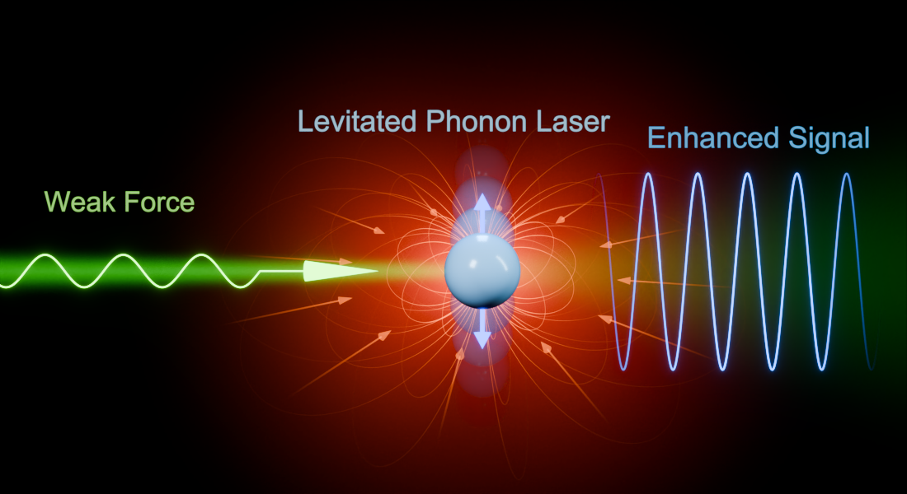
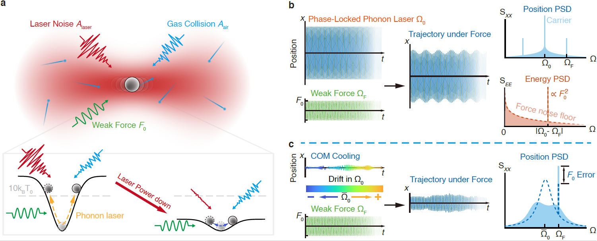
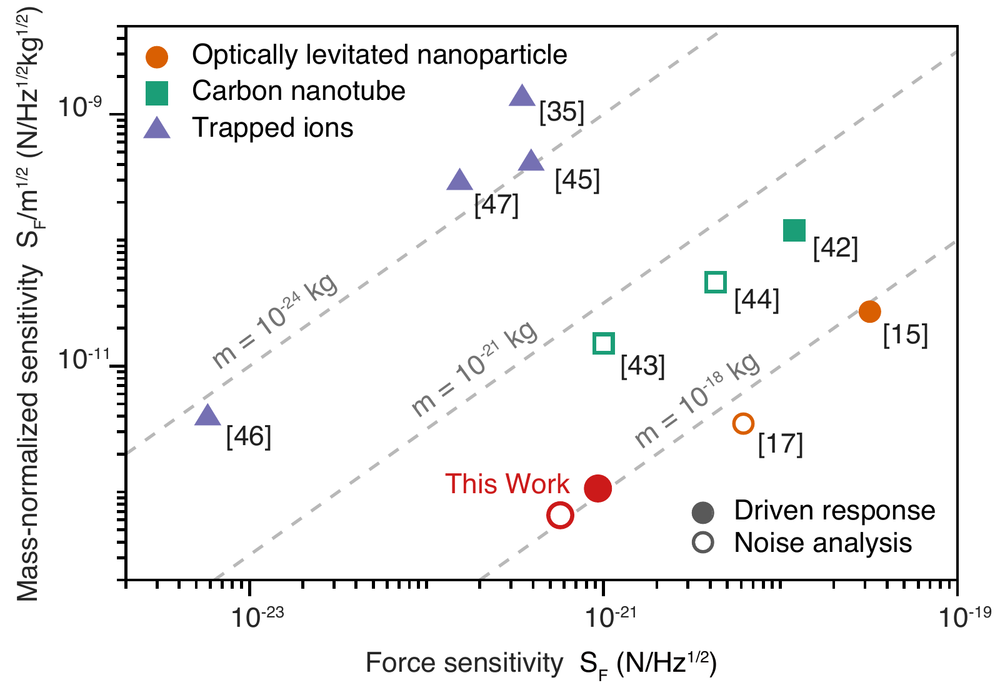

Optical levitation uses light to trap a micro- or nanoparticle in vacuum, where its mechanical motion provides a sensitive probe of external forces. With no mechanical contact with a substrate and little damping from residual gas, the particle can oscillate with very low dissipation. Its mass, size, material and charge can be chosen to suit different sensing tasks.
Lower noise through low-power optical trapping
Reducing the trapping laser power suppresses laser-induced force noise, but also weakens the trap and makes stable levitation more difficult. The team addressed this problem with a phonon laser: a stable, self-sustained mechanical oscillation maintained by a balance between gain and nonlinear dissipation. Its large-amplitude motion allows feedback to track the particle’s phase and frequency as the trapping power changes.
For a silica nanoparticle with a diameter of 90 nm, the researchers reduced the trapping power step by step from 100 mW to 1 mW while maintaining stable levitation. At 1 mW, the force noise reached (4.0 ± 0.3) × 10−22 N Hz−1/2, approaching a regime dominated by collisions with residual gas.
A stable carrier preserves the weak-force signal
Long measurement times require a stable response as well as low noise. Slow frequency drift can change the response of the mechanical oscillator and limit how effectively a weak signal accumulates. Directly stabilizing the motion that carries the signal can also suppress or distort the signal itself.
The team separated these roles using a carrier-modulation measurement scheme. A phase-locked loop stabilizes the phonon-laser carrier against an external reference clock, while a weak force modulates the carrier and produces signal sidebands. The force is recovered from the energy power spectrum, allowing the carrier to remain stable while preserving the weak-force signal in the modulation channel.

This approach achieved a force sensitivity of (9.3 ± 0.7) × 10−22 N Hz−1/2. With an optimal averaging time of 12,500 seconds, the force resolution reached (8 ± 4) × 10−24 N. These quantities describe different aspects of the performance: sensitivity characterizes the noise per square root of measurement bandwidth, while resolution describes the force that can be resolved after averaging.

Prospects for precision sensing and quantum control
Combining low-power optical trapping with long-term phase stability provides a route to measurements of weak electric fields, residual-gas collisions, surface forces and short-range interactions. The flexibility of the levitated probe may also support searches for light-mass dark matter. These are prospective applications of the platform.
Stable levitation at milliwatt power can also reduce laser heating and photon-related decoherence. This offers promising conditions for thermally sensitive materials and future work on macroscopic quantum state preparation and control.
Yu Zheng and Long Wang are co-first authors, and Professor Fang-Wen Sun is the corresponding author. The work was supported by the National Natural Science Foundation of China and a youth team program of the Chinese Academy of Sciences in basic research, among other projects.